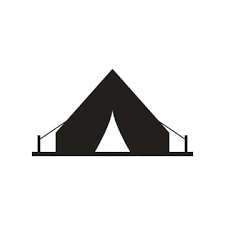

Experience
5+ years building at scaleFrontend Engineer | Full-Stack Systems
Building cinematic digital products with performance-first engineering.
I design as a
Software Engineer with 5+ years of experience shipping cloud-native applications, intelligent systems, and polished user experiences. I combine architecture rigor with premium interface craft.

Focus
Frontend UX, cloud systems, AI deliveryAbout
Intentional software engineering across interface, infrastructure, and product outcomes.
I build reliable systems and polished user experiences that scale with business demands. My work spans APIs, distributed processing, cloud operations, and high-quality frontend delivery.
What Drives My Work
I care about clean architecture, predictable delivery, and interfaces that feel crafted. From system design to production support, I optimize for long-term maintainability and measurable impact.
Across each build, I focus on performance, accessibility, and smooth interaction quality.
Experience
Education
Certifications
Experience
Recent work across AI products, full-stack execution, and data-intensive platforms.
Employee Assist AI
Mar 2025 - Present- Built production-ready LLM applications and autonomous workflow agents.
- Designed RAG pipelines for low-latency grounded retrieval.
- Developed scalable backend APIs and cloud deployment pipelines.
Local Grown Salads
Dec 2024 - Mar 2025- Implemented JWT authentication using Spring Boot and Firebase.
- Built modular onboarding and role-based dashboard control.
- Improved release velocity with Docker and GitHub Actions CI/CD.
Reliance Jio Platforms
Jul 2020 - Dec 2022- Led backend components for JioXplor geospatial intelligence workflows.
- Delivered Kafka + Spark data pipelines for high-volume location streams.
- Built reporting modules that informed high-priority business decisions.
Case Studies
How I approach problem framing, architecture, and execution quality.
Secure Authentication Platform
Problem
No scalable role-based access framework for internal operations.
Solution
Built Spring Boot + Firebase authentication with JWT session security, role routing, and test-backed API validation.
Impact
Cut onboarding time by 40% and created an extensible security baseline for growth.
JioXplor Geospatial Engine
Problem
Needed accurate large-scale reverse geolocation under strict latency constraints.
Solution
Built distributed Spark processing, multi-threaded API enrichment, and resilient storage workflows.
Impact
Enabled reliable POI intelligence and improved campaign planning during peak events.
Projects
Selected builds with strong engineering quality and interactive product thinking.



Skills
Interactive capability map across frontend, backend, cloud, and AI delivery.
0%
Backend Systems
Microservices, API architecture, resiliency.
0%
Cloud Engineering
AWS, GCP, Azure, scalable deployment patterns.
0%
Data and Streaming
Kafka, Spark, SQL, production data pipelines.
0%
Frontend Delivery
Interaction design, performance, and accessibility.
0%
AI Product Integration
RAG, agents, and enterprise AI workflows.
0%
DevOps and Delivery
CI/CD automation, observability, reliability.
Core Stack
Java
Python
JavaScript
Spring Boot
React
Kafka
Spark
Docker
Kubernetes
AWS
GCP
Azure
System Design
RAG Pipelines
GraphQL
CI/CD
Publication
Research contribution in sensor-driven plant health monitoring.
Arduino Based System to Monitor Plant Health and Growth Using Wireless Sensors
Journal: JETIR, Volume 5, Issue 11 (November 2018)
Designed an IoT framework for real-time monitoring of moisture, humidity, temperature, and plant stress indicators using wireless sensor networks. The system supported remote visibility and resource-efficient irrigation decisions.
Read Full PaperContact
Let us build something high-impact together.
Share your project or opportunity. I will respond quickly with next steps.
Direct Contact
Open to engineering roles, consulting, and collaborative product builds.
- Emailsrujit.v@gmail.com
- Phone+1 (862) 237-5382
- LinkedIn/in/srujitvarasala
- GitHubgithub.com/srujit12091997